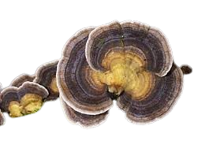
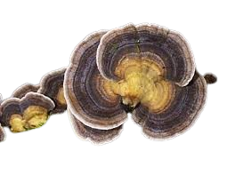

Descripción morfológica
Trametes versicolor, conocido como "cola de pavo" o "hongo de varios colores", es un hongo poliporo de la familia Polyporaceae. Sus cuerpos fructíferos semicirculares (3-8 cm de ancho) crecen en densos grupos imbricados sobre madera, mostrando bandas concéntricas de colores vibrantes que incluyen azules, verdes, rojos, naranjas y marrones. La superficie es aterciopelada con zonas texturizadas, mientras el himenio por debajo presenta poros blancos a crema, muy pequeños (3-5 por mm).
Características distintivas
- Coloración: Patrón multicolor único que recuerda las plumas de un pavo.
- Textura: Superficie superior zonada con terciopelo fino y áreas brillantes.
- Poros: Blancos a crema, redondeados, no decurrentes.
- Espesor: Delgado (1-3 mm) y flexible cuando fresco, quebradizo al secarse.
Distribución y hábitat
Especie cosmopolita presente en bosques de todo el mundo (excepto Antártida). Crece sobre troncos y tocones de maderas duras en descomposición, especialmente robles, arces y hayas. Coloniza tanto bosques primarios como áreas urbanas (parques, jardines), demostrando alta adaptabilidad. Fructifica durante todo el año en climas templados, siendo más visible en otoño e invierno cuando la vegetación circundante disminuye.
Ecología especializada
- Descomposición: Degrada principalmente lignina (hongo blanqueador).
- Estrategia: Descompone madera mediante enzimas extracelulares (lacasa, manganeso peroxidasa).
- Asociaciones: A menudo colonizado por larvas de insectos xilófagos.
Ciclo de vida y bioquímica
Hongo saprótrofo que forma micelio blanco dentro de la madera antes de producir cuerpos fructíferos. Los colores brillantes se deben a una combinación de pigmentos (melaninas, flavonoides) que varían según la exposición a luz UV. Produce compuestos antivirales (coriolano, PSK) y antioxidantes (phenolic compounds) de interés médico. Las esporas blancas (5-7 × 2-3 µm) se dispersan por el viento continuamente.
Etapas de desarrollo
- Colonización: Micelio blanco invade madera muerta.
- Primordios: Pequeños abultamientos multicolores aparecen en superficie.
- Madurez: Los cuerpos fructíferos persisten meses liberando esporas.
Importancia ecológica y usos
- ♻️ Biorremediación: Degrada contaminantes como colorantes textiles y pesticidas.
- 💊 Medicina: Fuente de polisacáridos-K (PSK), inmunoestimulante usado contra el cáncer.
- 🎨 Arte: Usado como tinte natural (produce tonalidades beige a marrón).
- 🔬 Biotecnología: Enzimas ligninolíticas aplicadas en producción de bioetanol.
Datos fascinantes
- Historia: Usado en medicina tradicional china por más de 2,000 años.
- Bioinspiración: Su estructura microporosa inspira diseños de filtros industriales.
- Variabilidad: Los patrones de color son únicos en cada ejemplar (como huellas dactilares).
- Longevidad: Los cuerpos fructíferos pueden persistir 2-3 años liberando esporas.
Técnicas de cultivo y observación
- Cultivo: Crece fácilmente en sustratos de serrín/salvado (20-25°C).
- Observación: Buscar en troncos horizontales a 1-2 m del suelo.
- Fotografía: Usar luz lateral para resaltar las zonas aterciopeladas.
- Microscopía: Las esporas cilíndricas son diagnósticas bajo aumento.
Investigación actual
Estudios recientes (2020-2023) exploran:
- Su potencial contra virus emergentes (incluyendo coronavirus).
- Nuevas enzimas para degradación de plásticos.
- Aplicaciones en biomateriales conductores de electricidad.